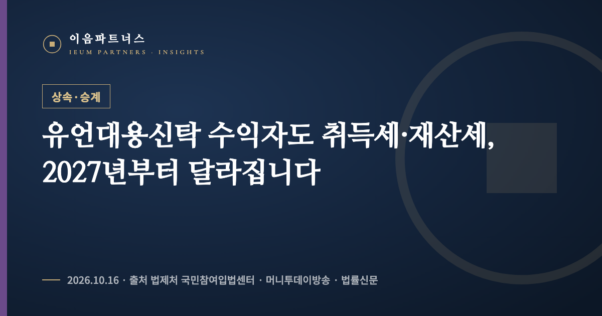

유언대용신탁 수익자도 취득세·재산세, 2027년부터 달라집니다

부동산을 유언대용신탁으로 정리해 두셨다면 확인하실 소식이 있습니다. 정부가 2026년 10월 16일 유언대용신탁과 수익자연속신탁의 수익자에게 취득세와 재산세를 매기는 「지방세법」 개정안을 국회에 냈습니다. 이 글에서는 무엇이 바뀌는지, 이미 만들어 둔 신탁에는 어떤 영향이 있는지 정리합니다.
개정안은 2027년 1월 1일 이후 세금 낼 의무가 생기는 경우부터 적용될 예정이라, 신탁 구조를 미리 점검해 볼 시간이 많지 않습니다(법률신문). 신탁으로 상속을 설계해 두셨다면 카카오톡 채널 이음파트너스에서 함께 점검해 볼 수 있습니다.
무엇이 바뀌나
유언대용신탁은 살아 있을 때 재산을 신탁회사 등에 맡기고 사망 뒤 그 이익을 받을 사람을 미리 정해 두는 신탁이고, 수익자연속신탁은 이익을 받는 사람(수익자)이 차례로 바뀌도록 정해 둔 신탁입니다. 지금까지는 수익자가 부동산 자체가 아니라 임대료나 매각대금을 받을 권리만 얻은 경우 취득세를 매기기 어렵다는 2025년 대법원 판단이 있었습니다.
정부 개정안은 이런 수익자에 대해 “그 부동산 등을 취득한 것으로 간주하여 그 자에 대하여 취득세를 부과”하도록 했습니다(법제처 국민참여입법센터). 신탁 없이 같은 건물을 직접 상속받은 사람과 세금을 맞추겠다는 취지입니다.
| 구분 | 내용 |
|---|---|
| 국회 제출 | 2026년 10월 16일 정부 제출(의안 제2221926호), 10월 19일 행정안전위원회 회부 |
| 시행 예정 | 2027년 1월 1일 이후 납세의무가 성립하는 경우부터 |
| 취득세 | 위탁자(재산을 맡긴 사람)나 직전 수익자가 사망한 날 수익자가 신탁재산을 취득한 것으로 봄 |
| 재산세 | 취득한 것으로 보는 수익자가 해당 부동산의 재산세 납세의무자가 됨 |
| 주택 수 | 신탁재산이 주택이면 수익자의 주택 수에 더함 |
수익자가 바뀔 때마다 세금이 생깁니다
예를 들어 건물주가 사망한 뒤 임대수입을 배우자에게 주고, 이후 자녀와 손자에게 차례로 넘어가도록 신탁을 만들었다면 각 수익자는 건물 소유권을 직접 받지 않아도 지방세를 내야 합니다(머니투데이방송). 수익권의 일부만 받아도 그 지분만큼 취득한 것으로 봅니다.
신탁 주택이 수익자의 주택 수에 들어간다는 점도 중요합니다. 수익자가 다른 집을 살 때 주택 수가 늘어난 것으로 계산될 수 있기 때문입니다. 다만 상속주택에 적용되는 주택 수 제외 규정과 일시적 2주택 특례는 적용받을 수 있도록 했습니다.
이미 만든 신탁은 어떻게 되나
개정안은 신탁을 언제 만들었는지보다 언제 세금 낼 의무가 생기는지를 기준으로 합니다. 수익자는 위탁자가 사망한 날 재산을 취득한 것으로 보므로, 이미 설정된 신탁이라도 2027년 1월 1일 이후 위탁자가 사망하면 새 규정이 적용될 수 있습니다. 다만 국회 심사 과정에서 내용이 바뀔 수 있고, 구체적인 방법은 시행령에서 정해집니다.
대표님이 지금 확인할 것
- 유언대용신탁·수익자연속신탁에 들어 있는 부동산 목록과 수익자 순서
- 수익자별로 생길 수 있는 취득세·재산세를 다시 계산해 보기
- 수익자가 이미 집을 가지고 있다면 주택 수 합산에 따른 영향
- 국회 심사 결과와 시행령 내용 확인
참고한 자료
- 지방세법 일부개정법률안(정부, 제2221926호) — 법제처 국민참여입법센터 (2026.10.16)
- 건물 안 물려받아도 세금 낸다…유언대용신탁 수익자 등에 취득세 [2026 지방세제 개편] — 머니투데이방송 (2026.08.26)
- 2026년 지방세제 개편안 – 주요 개정안 — 법률신문 (2026.09.03)
신탁은 한 번 설계하면 오래 유지되는 만큼, 바뀌는 세금까지 반영해 구조를 다시 살펴보시길 권합니다. 궁금한 점은 카카오톡 채널 이음파트너스로 문의해 주세요.
※ 이 글은 일반적인 정보 제공을 위한 것으로, 개별 사안은 세무사·노무사 등 전문가와 함께 확인하시기 바랍니다.